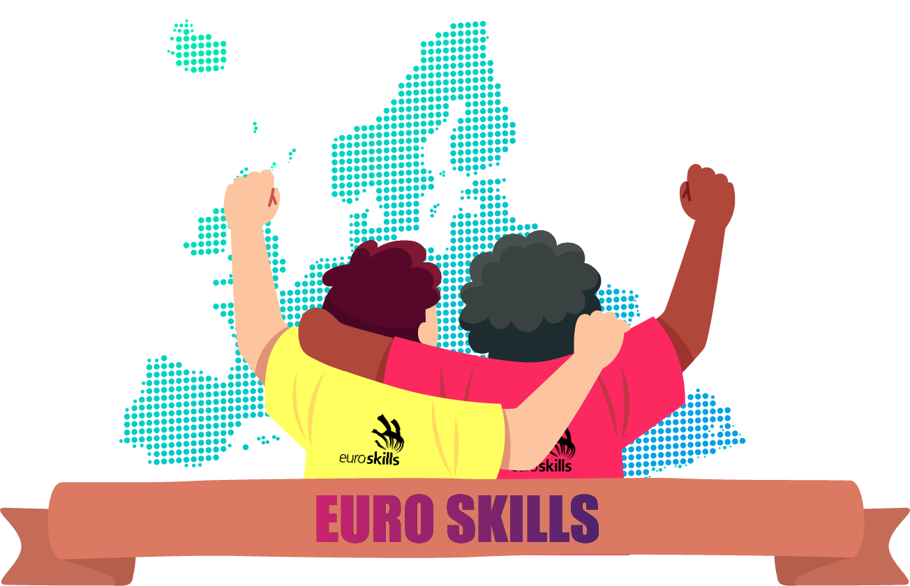

¡Comienza el viaje!
Primera fase: Comunidad Valenciana.
Campeonatos que se organizan a nivel autonómico, para seleccionar al los/las mejores alumnos/as de diferentes especialidades de Formación Profesional
Su principal objetivo es promocionar las enseñanzas de Formación Profesional, estimulando y motivando a los alumnos con la consiguiente mejora en la calidad de su formación.
Al mismo tiempo intenta reconocer y valorar la labor del profesorado, creando un punto de encuentro entre empresas, profesorado y estudiantes.
Fase nacional: Madrid.
Competición que pone a prueba las habilidades de estudiantes y recién titulados de Formación Profesional (FP) de los mejores de cada comunidad autónoma a través de retos y ejercicios de alta complejidad.
A lo largo de tres jornadas, los participantes medirán sus habilidades en las 27 modalidades de la competición oficial.
Los ganadores de Spainskills pasan a formar parte de la Selección Española de formación profesional.


Euroskills.
Esta competición es más que la competencia europea de habilidades, es una promoción espectacular de profesiones para jóvenes, con el objetivo de mostrar e inspirar la excelencia a nivel mundial en habilidades e introducir a los jóvenes en una variedad de carreras en toda Europa.
El enfoque principal de Euroskills es promover las competiciones como instrumento de promoción para un futuro cualificado e innovar en los programas de formación profesional para dar respuesta a las necesidades europeas de hoy.
WorldSkills
WorldSkills es una organización no gubernamental que tiene como misión principal mejorar el perfil y el reconocimiento de los titulados de formación profesional y mostrar la importancia de las habilidades profesionales para lograr el crecimiento económico y el éxito personal.
- Promover el intercambio entre jóvenes profesionales de diversas regiones del mundo.
- Intercambio de habilidades, experiencias e innovaciones tecnológicas.
- Aumentar la comprensión en los gobiernos, la educación y la industria sobre la importancia de la formación profesional.
- Sensibilizar a los jóvenes y a quienes influyen en los jóvenes sobre las oportunidades disponibles en las profesiones calificadas.